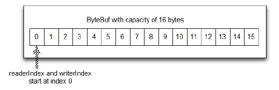
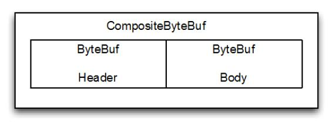
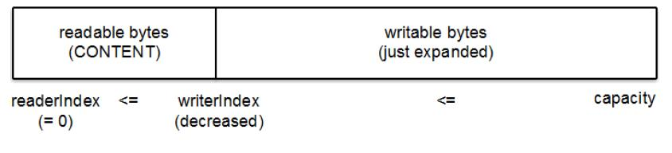
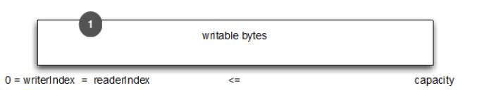

缓冲
Table of Contents
网络数据的基本单位永远是 byte(字节)。Java NIO 提供 ByteBuffer 作为字节的容器，但这个类是过于复杂，有点难以使用
Netty 中 ByteBuffer 替代是 ByteBuf，一个强大的实现，解决 JDK 的 API 的限制，以及为网络应用程序开发者一个更好的工具。 但 ByteBuf 并不仅仅暴露操作一个字节序列的方法，这也是专门的Netty 的 ChannelPipeline 的语义设计
在本章中，我们会说明相比于 JDK 的 API，ByteBuf 所提供的卓越的功能和灵活性。这也将使我们能够更好地理解了 Netty 的数据处理
Buffer API
主要包括：
- ByteBuf
- ByteBufHolder
Netty 使用 reference-counting 来判断何时可以释放 ByteBuf 或 ByteBufHolder 和其他相关资源，从而可以利用池和其他技巧来提高性能和降低内存的消耗。这一点上不需要开发人员做任何事情，但是在开发 Netty 应用程序时，尤其是使用 ByteBuf 和 ByteBufHolder 时，你应该尽可能早地释放池资源。 Netty 缓冲 API 提供了几个优势：
- 可以自定义缓冲类型
- 通过一个内置的复合缓冲类型实现零拷贝
- 扩展性好，比如 StringBuilder
- 不需要调用 flip() 来切换读/写模式
- 读取和写入索引分开
- 方法链
- 引用计数
- Pooling(池)
ByteBuf
因为所有的网络通信最终都是基于底层的字节流传输，因此一个高效、方便、易用的数据接口是必要的，而 Netty 的 ByteBuf 满足这些需求
ByteBuf 是一个很好的经过优化的数据容器，可以将字节数据有效的添加到 ByteBuf 中或从 ByteBuf 中获取数据。ByteBuf 有2部分：
- 一个用于读
- 一个用于写
可以按顺序的读取数据，也可以通过调整读取数据的索引或者直接将读取位置索引作为参数传递给get方法来重复读取数据
原理
写入数据到 ByteBuf 后，writerIndex（写入索引）增加。开始读字节后，readerIndex（读取索引）增加。你可以读取字节，直到写入索引和读取索引处在相同的位置，ByteBuf 变为不可读。当访问数据超过数组的最后位，则会抛出 IndexOutOfBoundsException
调用 ByteBuf 的 read 或 *write 开头的任何方法都会提升相应的索引。另一方面， set 、 get 操作字节将不会移动索引位置，他们只会操作相关的通过参数传入方法的相对索引
可以给ByteBuf指定一个最大容量值，这个值限制着ByteBuf的容量。任何尝试将写入索引超过这个值的行为都将导致抛出异常。ByteBuf 的默认最大容量限制是 Integer.MAX_VALUE
ByteBuf 类似于一个字节数组，最大的区别是读和写的索引可以用来控制对缓冲区数据的访问。下图显示了一个容量为16的空的 ByteBuf 的布局和状态，writerIndex 和 readerIndex 都在索引位置 0 ：

使用
Heap Buffer(堆缓冲区)
最常用的模式是 ByteBuf 将数据存储在 JVM 的堆空间，这是通过将数据存储在数组的实现。堆缓冲区可以快速分配，当不使用时也可以快速释放。它还提供了直接访问数组的方法，通过 ByteBuf.array() 来获取 byte[]数据。 这种方法，正如清单5.1中所示的那样，是非常适合用来处理遗留数据的
ByteBuf heapBuf = ...; if (heapBuf.hasArray()) { //1 检查 ByteBuf 是否有支持数组 byte[] array = heapBuf.array(); //2 如果有的话，得到引用数组 int offset = heapBuf.arrayOffset() + heapBuf.readerIndex(); //3 计算第一字节的偏移量 int length = heapBuf.readableBytes(); //4 获取可读的字节数 handleArray(array, offset, length); //5 使用数组，偏移量和长度作为调用方法的参数 }
注意：
- 访问非堆缓冲区 ByteBuf 的数组会导致UnsupportedOperationException， 可以使用 ByteBuf.hasArray()来检查是否支持访问数组
- 这个用法与 JDK 的 ByteBuffer 类似
Direct buffer (直接缓冲区)
直接缓冲区 是另一个 ByteBuf 模式。对象的所有内存分配发生在堆？好吧，并非总是如此。在 JDK1.4 中被引入 NIO 的ByteBuffer 类允许 JVM 通过本地方法调用分配内存，其目的是：
- 通过免去中间交换的内存拷贝，提升IO处理速度，直接缓冲区的内容可以驻留在垃圾回收扫描的堆区以外
- DirectBuffer 在 -XX:MaxDirectMemorySize=xxM大小限制下, 使用 Heap 之外的内存, GC对此无能为力，也就意味着规避了在高负载下频繁的GC过程对应用线程的中断影响
这就解释了为什么 直接缓冲区 对于那些通过 socket 实现数据传输的应用来说，是一种非常理想的方式。如果你的数据是存放在堆中分配的缓冲区，那么实际上，在通过 socket 发送数据之前，JVM 需要将先数据复制到直接缓冲区
但是直接缓冲区的缺点是在内存空间的分配和释放上比堆缓冲区更复杂，另外一个缺点是如果要将数据传递给遗留代码处理，因为数据不是在堆上，你可能不得不作出一个副本，如下：
ByteBuf directBuf = ... if (!directBuf.hasArray()) { //1 检查 ByteBuf 是不是由数组支持。如果不是，这是一个直接缓冲区 int length = directBuf.readableBytes(); //2 获取可读的字节数 byte[] array = new byte[length]; //3 分配一个新的数组来保存字节 directBuf.getBytes(directBuf.readerIndex(), array); //4 字节复制到数组 handleArray(array, 0, length); //5 将数组，偏移量和长度作为参数调用某些处理方法 }
显然，这比使用数组要多做一些工作。因此，如果事前就知道容器里的数据将作为一个数组被访问，可能更愿意使用堆内存
Composite Buffer (复合缓冲区)
最后一种模式是复合缓冲区，可以创建多个不同的 ByteBuf，然后提供一个这些 ByteBuf 组合的视图。复合缓冲区就像一个列表，可以动态的添加和删除其中的 ByteBuf，JDK 的 ByteBuffer 没有这样的功能
Netty 提供了 ByteBuf 的子类 CompositeByteBuf 类来处理复合缓冲区，CompositeByteBuf 只是一个视图
CompositeByteBuf.hasArray() 总是返回 false，因为它可能既包含堆缓冲区，也包含直接缓冲区
例如，一条消息由 header 和 body 两部分组成，将 header 和 body 组装成一条消息发送出去，可能 body 相同，只是 header 不同，使用CompositeByteBuf 就不用每次都重新分配一个新的缓冲区。下图显示CompositeByteBuf 组成 header 和 body：

下面代码显示了使用 JDK 的 ByteBuffer 的一个实现。两个 ByteBuffer 的数组创建保存消息的组件，第三个创建用于保存所有数据的副本：
// 使用数组保存消息的各个部分 ByteBuffer[] message = { header, body }; // 使用副本来合并这两个部分 ByteBuffer message2 = ByteBuffer.allocate( header.remaining() + body.remaining()); message2.put(header); message2.put(body); message2.flip();
这种做法显然是低效的：分配和复制操作不是最优的方法，操纵数组使代码显得很笨拙
下面看使用 CompositeByteBuf 的改进版本：
CompositeByteBuf messageBuf = ...; ByteBuf headerBuf = ...; // 可以支持或直接 ByteBuf bodyBuf = ...; // 可以支持或直接 messageBuf.addComponents(headerBuf, bodyBuf); //1 追加 ByteBuf 实例的 CompositeByteBuf messageBuf.removeComponent(0); //2 删除索引1的 ByteBuf for (int i = 0; i < messageBuf.numComponents(); i++) { //3 遍历所有 ByteBuf 实例 System.out.println(messageBuf.component(i).toString()); }
简单地把 CompositeByteBuf 当作一个可迭代遍历的容器。 CompositeByteBuf 不允许访问其内部可能存在的支持数组，也不允许直接访问数据，这一点类似于直接缓冲区模式。想要读取数据，需要如下面代码所示：
CompositeByteBuf compBuf = ...; int length = compBuf.readableBytes(); //1 得到的可读的字节数 byte[] array = new byte[length]; //2 分配一个新的数组,数组长度为可读字节长度 compBuf.getBytes(compBuf.readerIndex(), array); //3 读取字节到数组 handleArray(array, 0, length); //4 使用数组，把偏移量和长度作为参数
Netty 尝试使用 CompositeByteBuf 优化 socket I/O 操作，消除原生 JDK 中可能存在的的性能低和内存消耗问题。虽然这是在 Netty 的核心代码中进行的优化，并且是不对外暴露的，但是作为开发者还是应该意识到其影响
字节级别的操作
除了基本的读写操作， ByteBuf 还提供了它所包含的数据的修改方法
随机访问索引
ByteBuf 使用从0开始的索引，第一个字节的索引是 0，最后一个字节的索引是 ByteBuf 的 capacity - 1，下面代码是遍历 ByteBuf 的所有字节：
ByteBuf buffer = ...; for (int i = 0; i < buffer.capacity(); i++) { byte b = buffer.getByte(i); System.out.println((char) b); }
注意：通过索引访问时不会推进 readerIndex 和 writerIndex，我们可以通过 ByteBuf 的 readerIndex(index) 或 writerIndex(index) 来分别推进读索引或写索引
顺序访问索引
ByteBuf 提供两个指针变量支付读和写操作，读操作是使用 readerIndex()，写操作时使用 writerIndex()。这和JDK的ByteBuffer不同，ByteBuffer只有一个方法来设置索引，所以需要使用 flip() 方法来切换读和写模式
ByteBuf 一定符合：0 <= readerIndex <= writerIndex <= capacity

- 字节，可以被丢弃，因为它们已经被读
- 还没有被读的字节是： readable bytes（可读字节）
- 空间可加入多个字节的是： writeable bytes（写字节）
可丢弃字节的字节
标有 可丢弃字节 的段包含已经被读取的字节。他们可以被丢弃，通过调用discardReadBytes() 来回收空间。这个段的初始大小存储在readerIndex，为 0，当 read 操作被执行时递增（ get 操作不会移动 readerIndex）
图5.4示出了在 图5.3 中的缓冲区中调用 discardReadBytes() 所示的结果。可以看到，在丢弃字节段的空间已变得可用写。需要注意的是不能保证对可写的段之后的内容在 discardReadBytes() 方法之后已经被调用：

- 字节尚未被读出（readerIndex 现在 0）
- 可用的空间，由于空间被回收而增大
ByteBuf.discardReadBytes() 可以用来清空 ByteBuf 中已读取的数据，从而使 ByteBuf 有多余的空间容纳新的数据，但是discardReadBytes() 可能会涉及内存复制，因为它需要移动 ByteBuf 中可读的字节到开始位置，这样的操作会影响性能，一般在需要马上释放内存的时候使用收益会比较大
可读字节
ByteBuf 的 可读字节 分段存储的是实际数据。新分配，包装，或复制的缓冲区的 readerIndex 的默认值为 0 。任何操作，其名称以 read 或 skip 开头的都将检索或跳过该数据在当前 readerIndex ，并且通过读取的字节数来递增
如果所谓的读操作是一个指定 ByteBuf 参数作为写入的对象，并且没有一个目标索引参数，目标缓冲区的 writerIndex 也会增加了。例如：
readBytes(ByteBuf dest);
如果试图从缓冲器读取已经用尽的可读的字节，则抛出IndexOutOfBoundsException。下面显示了如何读取所有可读字节：
//遍历缓冲区的可读字节 ByteBuf buffer= ...; while (buffer.isReadable()) { System.out.println(buffer.readByte()); }
一个新分配的缓冲区的 writerIndex 的默认值是 0 。任何操作，其名称 write 开头的操作在当前的 writerIndex 写入数据时，递增字节写入的数量。如果写操作的目标也是 ByteBuf ，且未指定源索引，则源缓冲区的 readerIndex 将增加相同的量。例如：
writeBytes(ByteBuf dest);
如果试图写入超出目标的容量，则抛出 IndexOutOfBoundException
下面的例子展示了填充随机整数到缓冲区中，直到耗尽空间。该方法writableBytes() 被用在这里确定是否存在足够的缓冲空间：
//填充随机整数到缓冲区中 ByteBuf buffer = ...; while (buffer.writableBytes() >= 4) { buffer.writeInt(random.nextInt()); }
索引管理
在 JDK 的 InputStream 定义了 mark(int readlimit) 和 reset()方法。这些是分别用来标记流中的当前位置和复位流到该位置
同样，可以设置和重新定位ByteBuf readerIndex 和 writerIndex 通过调用 markReaderIndex(), markWriterIndex(), resetReaderIndex() 和 resetWriterIndex()。这些类似于InputStream 的调用，所不同的是，没有 readlimit 参数来指定当标志变为无效
可以通过调用 readerIndex(int) 或 writerIndex(int) 将指标移动到指定的位置。在尝试任何无效位置上设置一个索引将导致 IndexOutOfBoundsException 异常
调用 clear() 可以同时设置 readerIndex 和 writerIndex 为 0。注意，这不会清除内存中的内容。调用之前，包含3个段，下面显示了调用之后：

现在整个 ByteBuf 空间都是可写的了。clear() 比 discardReadBytes() 更低成本，因为他只是重置了索引，而没有内存拷贝
查询操作
有几种方法，以确定在所述缓冲器中的指定值的索引。最简单的是使用 indexOf() 方法。更复杂的搜索执行以 ByteBufProcessor 为参数的方法。这个接口定义了一个方法，boolean process(byte value)，它用来报告输入值是否是一个正在寻求的值
ByteBufProcessor 定义了很多方便实现共同目标值。例如，假设您的应用程序需要集成所谓的“Flash sockets”，将使用 NULL 结尾的内容：
int index=buffer.forEachByte（ByteBufProcessor.FIND_NUL）;
通过减少的，因为少量的 边界检查 的处理过程中执行了，从而使 消耗 Flash 数据变得 编码工作量更少、效率更高
下面例子展示了寻找一个回车符 \r的一个例子：
ByteBuf buffer = ...; int index = buffer.forEachByte(ByteBufProcessor.FIND_CR);
衍生的缓冲区
衍生的缓冲区 是代表一个专门的展示 ByteBuf 内容的 视图 。这种视图是由 duplicate(), slice(), slice(int, int), readOnly() 和 order(ByteOrder) 方法创建的。所有这些都返回一个新的 ByteBuf 实例包括它自己的 reader, writer 和标记索引。然而，内部数据存储共享就像在一个 NIO 的 ByteBuffer。这使得衍生的缓冲区创建、修改其 内容，以及修改其 源 实例更廉价
ByteBuf 拷贝
如果需要已有的缓冲区的全新副本，使用 copy() 或者 copy(int, int) 。不同于派生缓冲区，这个调用返回的 ByteBuf 有数据的独立副本
若需要操作某段数据，使用 slice(int, int) ，下面展示了用法：
Charset utf8 = Charset.forName("UTF-8"); ByteBuf buf = Unpooled.copiedBuffer("Netty in Action rocks!", utf8); //1 创建一个 ByteBuf 保存特定字节串 ByteBuf sliced = buf.slice(0, 14); //2 创建从索引 0 开始，并在 14 结束的 ByteBuf 的新 slice System.out.println(sliced.toString(utf8)); //3 打印 Netty in Action buf.setByte(0, (byte) 'J'); //4 更新索引 0 的字节 assert buf.getByte(0) == sliced.getByte(0); // 5 断言成功，因为数据是共享的，并以一个地方所做的修改将在其他地方可见
下面看下如何将一个 ByteBuf 段的副本不同于 slice：
Charset utf8 = Charset.forName("UTF-8"); ByteBuf buf = Unpooled.copiedBuffer("Netty in Action rocks!", utf8); //1 创建一个 ByteBuf 保存特定字节串 ByteBuf copy = buf.copy(0, 14); //2 创建从索引0开始和 14 结束 的 ByteBuf 的段的拷贝 System.out.println(copy.toString(utf8)); //3 .打印 Netty in Action buf.setByte(0, (byte) 'J'); //4 更新索引 0 的字节 assert buf.getByte(0) != copy.getByte(0); //5 断言成功，因为数据不是共享的，并以一个地方所做的修改将不影响其他
代码几乎是相同的，但所 衍生的 ByteBuf 效果是不同的。因此，使用一个 slice 可以尽可能避免复制内存
读/写操作
读/写操作主要由2类：
- get()/set() ：操作从给定的索引开始，保持不变
- read()/write()： 操作从给定的索引开始，与字节访问的数量来适用，递增当前的写索引或读索引
下表是常见的 get() 操作：
| 方法名称 | 描述 |
| getBoolean(int) | 返回当前索引的 Boolean 值 |
| getByte(int) getUnsignedByte(int) | 返回当前索引的(无符号)字节 |
| getMedium(int) getUnsignedMedium(int) | 返回当前索引的 (无符号) 24-bit 中间值 |
| getInt(int) getUnsignedInt(int) | 返回当前索引的(无符号) 整型 |
| getLong(int) getUnsignedLong(int) | 返回当前索引的 (无符号) Long 型 |
| getShort(int) getUnsignedShort(int) | 返回当前索引的 (无符号) Short 型 |
| getBytes(int, …) | 字节 |
常见 set() 操作如下：
| 方法名称 | 描述 |
| setBoolean(int, boolean) | 在指定的索引位置设置 Boolean 值 |
| setByte(int, int) | 在指定的索引位置设置 byte 值 |
| setMedium(int, int) | 在指定的索引位置设置 24-bit 中间 值 |
| setInt(int, int) | 在指定的索引位置设置 int 值 |
| setLong(int, long) | 在指定的索引位置设置 long 值 |
| setShort(int, int) | 在指定的索引位置设置 short 值 |
下面是 get 和 set 的实例：
Charset utf8 = Charset.forName("UTF-8"); ByteBuf buf = Unpooled.copiedBuffer("Netty in Action rocks!", utf8); //1 创建一个新的 ByteBuf 给指定 String 保存字节 System.out.println((char)buf.getByte(0)); //2 打印的第一个字符，N int readerIndex = buf.readerIndex(); //3 存储当前 readerIndex 和 writerIndex int writerIndex = buf.writerIndex(); buf.setByte(0, (byte)'B'); //4 更新索引 0 的字符B System.out.println((char)buf.getByte(0)); //5 打印出的第一个字符，现在B assert readerIndex == buf.readerIndex(); //6 这些断言成功，因为这些操作永远不会改变索引 assert writerIndex == buf.writerIndex();
下面展示了常见的 read() 方法：
| 方法名称 | 描述 |
| readBoolean() | Reads the Boolean value at the current readerIndex and increases the readerIndex by 1 |
| readByte() readUnsignedByte() | Reads the (unsigned) byte value at the current readerIndex and increases the readerIndex by 1 |
| readMedium() readUnsignedMedium() | Reads the (unsigned) 24-bit medium value at the current readerIndex and increases the readerIndex by 3 |
| readInt() readUnsignedInt() | Reads the (unsigned) int value at the current readerIndex and increases the readerIndex by 4 |
| readLong() readUnsignedLong() | Reads the (unsigned) int value at the current readerIndex and increases the readerIndex by 8 |
| readShort() readUnsignedShort() | Reads the (unsigned) int value at the current readerIndex and increases the readerIndex by 2 |
| readBytes(int,int, …) | Reads the value on the current readerIndex for the given length into the given object. Also increases the readerIndex by the length. |
每个 read() 方法都对应一个 write()：
| 方法名称 | 描述 |
| writeBoolean(boolean) | Writes the Boolean value on the current writerIndex and increases the writerIndex by 1 |
| writeByte(int) | Writes the byte value on the current writerIndex and increases the writerIndex by 1 |
| writeMedium(int) | Writes the medium value on the current writerIndex and increases the writerIndex by 3 |
| writeInt(int) | Writes the int value on the current writerIndex and increases the writerIndex by 4 |
| writeLong(long) | Writes the long value on the current writerIndex and increases the writerIndex by 8 |
| writeShort(int) | Writes the short value on the current writerIndex and increases thewriterIndex by 2 |
| writeBytes(int，…） | Transfers the bytes on the current writerIndex from given resources |
下面是 read 和 write 的实例：
Charset utf8 = Charset.forName("UTF-8"); ByteBuf buf = Unpooled.copiedBuffer("Netty in Action rocks!", utf8); //1 创建一个新的 ByteBuf 保存给定 String 的字节 System.out.println((char)buf.readByte()); //2 打印的第一个字符 N int readerIndex = buf.readerIndex(); //3 存储当前的 readerIndex int writerIndex = buf.writerIndex(); //4 保存当前的 writerIndex buf.writeByte((byte)'B'); //5 更新索引0的字符 B assert readerIndex == buf.readerIndex(); assert writerIndex != buf.writerIndex(); //6 此断言成功，因为 writeByte() 在 5 移动了 writerIndex
更多操作
| 方法名称 | 描述 |
| isReadable() | Returns true if at least one byte can be read |
| isWritable() | Returns true if at least one byte can be written |
| readableBytes() | Returns the number of bytes that can be read |
| writablesBytes() | Returns the number of bytes that can be written |
| capacity() | Returns the number of bytes that the ByteBuf can hold. After this it will try to expand again until maxCapacity() is reached |
| maxCapacity() | Returns the maximum number of bytes the ByteBuf can hold |
| hasArray() | Returns true if the ByteBuf is backed by a byte array |
| array() | Returns the byte array if the ByteBuf is backed by a byte array, otherwise throws an UnsupportedOperationException |
ByteBufHolder
我们经常遇到需要另外存储除有效的实际数据各种属性值。 HTTP 响应是一个很好的例子；与内容一起的字节的还有状态码, cookies等
Netty 提供 ByteBufHolder 处理这种常见的情况。 ByteBufHolder 还提供对于 Netty 的高级功能，如缓冲池，其中保存实际数据的 ByteBuf 可以从池中借用，如果需要还可以自动释放
ByteBufHolder 有那么几个方法。到底层的这些支持接入数据和引用计数。表5.7所示的方法：
| 名称 | 描述 |
| data() | 返回 ByteBuf 保存的数据 |
| copy() | 制作一个 ByteBufHolder 的拷贝，但不共享其数据(所以数据也是拷贝) |
如果你想实现一个 消息对象 有效负载存储在 ByteBuf，使用ByteBufHolder 是一个好主意
ByteBuf 分配
本节介绍 ByteBuf 实例管理的几种方式：
ByteBufAllocator
为了减少分配和释放内存的开销，Netty 通过支持池类 ByteBufAllocator，可用于分配的任何 ByteBuf 我们已经描述过的类型的实例。是否使用池是由应用程序决定的，表5.8列出了 ByteBufAllocator 提供的操作：
| 名称 | 描述 |
| buffer() buffer(int) buffer(int, int) | Return a ByteBuf with heap-based or direct data storage |
| heapBuffer() heapBuffer(int) heapBuffer(int, int) | Return a ByteBuf with heap-based storage |
| directBuffer() directBuffer(int) directBuffer(int, int) | Return a ByteBuf with direct storage |
| compositeBuffer() compositeBuffer(int) heapCompositeBuffer() heapCompositeBuffer(int) directCompositeBuffer() directCompositeBuffer(int) | Return a CompositeByteBuf that can be expanded by adding heapbased or direct buffers |
| ioBuffer() | Return a ByteBuf that will be used for I/O operations on a socket |
通过一些方法接受整型参数允许用户指定 ByteBuf 的初始和最大容量值。你可能还记得，ByteBuf 存储可以扩大到其最大容量
得到一个 ByteBufAllocator 的引用很简单。你可以得到从 Channel ，或通过绑定到的 ChannelHandler 的 ChannelHandlerContext 得到它，用它实现了数据处理逻辑
下面的代码说明获得 ByteBufAllocator 的两种方式：
Channel channel = ...; ByteBufAllocator allocator = channel.alloc(); //1 从 channel 获得 ByteBufAllocator .... ChannelHandlerContext ctx = ...; ByteBufAllocator allocator2 = ctx.alloc(); //2 从 ChannelHandlerContext 获得 ByteBufAllocator ...
Netty 提供了两种 ByteBufAllocator 的实现：
- PooledByteBufAllocator，用ByteBuf 实例池改进性能以及内存使用降到最低，此实现使用一个 jemalloc 内存分配
- 不池化 ByteBuf 情况下，每次返回一个新的实例
Netty 默认使用 PooledByteBufAllocator，可以通过 ChannelConfig 或通过引导设置一个不同的实现来改变
Unpooled 缓存
当未引用 ByteBufAllocator 时，上面的方法无法访问到 ByteBuf。对于这个用例 Netty 提供一个实用工具类称为 Unpooled,，它提供了静态辅助方法来创建非池化的 ByteBuf 实例。表5.9列出了最重要的方法：
| 名称 | 描述 |
| buffer() buffer(int) buffer(int, int) | Returns an unpooled ByteBuf with heap-based storage |
| directBuffer() directBuffer(int) directBuffer(int, int) | Returns an unpooled ByteBuf with direct storage |
| wrappedBuffer() | Returns a ByteBuf, which wraps the given data. |
| copiedBuffer() | Returns a ByteBuf, which copies the given data |
ByteBufUtil
ByteBufUtil 静态辅助方法来操作 ByteBuf，因为这个 API 是通用的，与使用池无关，这些方法已经在外面的分配类实现
最有价值的是 hexDump() 方法，这个方法返回指定 ByteBuf 中可读字节的十六进制字符串，可以用于调试程序时打印 ByteBuf 的内容。一个典型的用途是记录一个 ByteBuf 的内容进行调试。十六进制字符串相比字节而言对用户更友好。 而且十六进制版本可以很容易地转换回实际字节表示
另一个有用方法是使用 boolean equals(ByteBuf, ByteBuf),用来比较 ByteBuf 实例是否相等。在实现自己 ByteBuf 的子类时经常用到
引用计数器
Netty 4 引入了 引用计数器给 ByteBuf 和 ByteBufHolder
引用计数本身并不复杂，它在特定的对象上跟踪引用的数目。实现了 ReferenceCounted 的类的实例会通常开始于一个活动的引用计数器为 1。活动的引用计数器大于0的对象被保证不被释放。当数量引用减少到0，该实例将被释放。需要注意的是 释放 的语义是特定于具体的实现。最起码，一个对象，它已被释放应不再可用。
这种技术就是诸如 PooledByteBufAllocator 这种 减少内存分配开销的池化 的精髓部分
获取引用计数：
Channel channel = ...; ByteBufAllocator allocator = channel.alloc(); //1 从 channel 获取 ByteBufAllocator .... ByteBuf buffer = allocator.directBuffer(); //2 从 ByteBufAllocator 分配一个 ByteBuf assert buffer.refCnt() == 1; //3 检查引用计数器是否是 1 ...
释放应用计数：
ByteBuf buffer = ...; boolean released = buffer.release(); //1 release() 将会递减对象引用的数目。当这个引用计数达到0时，对象已被释放，并且该方法返回 true ...
如果尝试访问已经释放的对象，将会抛出 IllegalReferenceCountException 异常。
一个特定的类可以定义自己独特的方式其 释放计数的规则 ，例如 release() 可以将引用计数器直接计为 0 而不管当前引用的对象数目
在一般情况下，最后访问的对象负责释放它